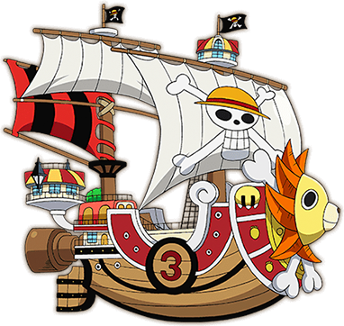

East Blue |
Começamos pela saga que apresentou Luffy ao mundo, a chamada Saga East Blue. Ela mostra o personagem ainda criança vivendo em East Blue e no início do recrutamento de tripulantes para ele caçar o One Piece e tentar se tornar o Rei dos Piratas. |
Alabasta |
Na segunda saga, intitulada Alabasta (ou Baroque Works) Luffy e sua tripulação segue na busca pelo One Piece, na tentativa do rapaz se tornar o Rei dos Piratas. Entretanto, eles precisam ajudar a Nefertari Vivi a chegar na sua pátria antes que uma guerra se inicie. O problema é que uma organização mal intencionada vai fazer de tudo para impedir Luffy e seus amigos de chegar em Alabasta. |
Skypiea |
Na terceira saga de One Piece, intitulada Skypieia, os Chapéus de Palha seguem em sua aventura. Porém, Luffy e os outros se deparam com uma terra cheia de mistérios e envolvida em uma guerra que pode destruir de uma vez Skypiera. Esse é um dos arcos que já começam com fillers logo no início da saga. |
Water 7 |
Water 7 é a quarta saga de One Piece, conhecia também por Saga Enies Lobby ou Saga CP9. Desta vez, os piratas já estão em mar aberto novamente e irão enfrentar alguns perigos em sua empreitada na busca do One Piece. Um deles é o trapaceiro Foxy, além de um dos três Mirantes da Marinha, chamado Aokiji. Luffy precisa chegar a Water 7 para encontrar um carpinteiro que se junte a sua tripulação e conserte seu navio. |
Thriller Bark |
Na quinta saga do anime, Luffy e os tripulantes acabam desembarcando em uma ilha fantasma chamada Thriller Bark. No local, um estranho personagem usa a sombra de Luffy para reviver Oars, um lendário gigante. Com a ajuda de Brook, um esqueleto, Luffy e os outros Chapéus de Palha terão que enfrentar Oars e aquele que lhe trouxe de volta a vida. |
Guerra de Marineford |
Conhecida também como Saga Cúpula da Guerra, a Guerra de Marineford marca o final da primeira metade do anime. Neste ponto da trama, Luffy e os outros Piratas do Chapéu de Palha são separados no Arquipélago de Sabaody. E é aqui que as coisas parecem se tornar um pouco mais difíceis para Luffy e os outros. |
Ilha dos Homens-Peixe |
Conhecida também como Saga Ilha dos Homens-Peixe, ela apresenta a trama depois de 2 anos do timeskip (avanço de tempo). Os Chapéus de Palha se reencontram no Arquipélago Sabaody e rumam para o Novo Mundo, mas para isso eles precisam passar pela Ilha dos Tritões e enfrentar alguns piratas que estão por ali. |
Aliança Pirata |
Finalmente Luffy e sua tripulação conseguem chegar ao Novo Mundo, porém eles acabam se deparando com um antigo laboratório do Dr. Vegapunk e encontram experimentos ilegais de Caesar Clown. Luffy acaba formando alianças e descobre uma conspiração existente na ilha de Dressrosa. |
Yonkou |
Chegamos a saga mais atual de One Piece, intitulado Yonkou. Uma aliança chamada Ninja-Pirata-Mink-Samurai é formada para derrubar Kaido. É quando Luffy entra em ação, se envolve com um Yonko chamado Big Mom e precisa embarcar numa missão de resgate de seu amigo, Sanji. |